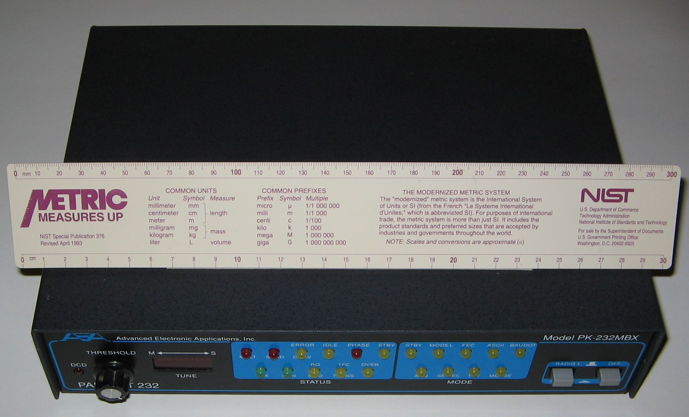

AEA PK-232 Pakratt 232
The box that made the radio spectrum feel like a data network

Overview
The AEA PK-232 'Pakratt 232' is a multimode amateur radio data controller (Terminal Node Controller, or TNC) introduced in 1986 by Advanced Electronic Applications, Inc. of Lynnwood, Washington. Housed in a substantial metal box (11.4 × 2.4 × 8.4 inches, 3 lbs), it sits between a personal computer and one or two radio transceivers, functioning as a universal translator for the radio spectrum. The front panel features 21 status LEDs indicating mode (Packet, RTTY, CW, AMTOR, Fax), port activity, tuning lock, and data flow. The PK-232 decodes packet radio (AX.25), radioteletype (RTTY), Morse code (CW), AMTOR, SITOR, weather fax (WEFAX), and Navtex — making the radio spectrum feel like a data network years before the public internet. It was the best-selling multimode data controller in amateur radio history, priced at $319.95 at introduction in 1987.
Deep dive
The PK-232's front panel is a miniature information dashboard that makes the invisible radio spectrum visible. Status LEDs indicate which mode is active (Packet, RTTY, CW, AMTOR, Fax), which radio port is in use, and the connection state: DCD (Data Carrier Detect — a signal is being received), CON (Connected to another station), STA (Status), TFC (Traffic — data is flowing), and XMT (Transmitting). Tuning indicator LEDs help the operator zero in on a signal: as you tune your radio across the dial, the LEDs flicker brighter when a valid data signal locks on. The experience is tactile and visual — twisting a VFO knob while watching LEDs, then seeing text scroll onto your green-screen CRT as if by magic.
The PK-232's back panel features two 5-pin Molex radio ports, allowing connection to BOTH an HF (shortwave) and a VHF radio simultaneously. A single DB-25 RS-232 serial port connects to a computer or dumb terminal at 110–9600 baud. The operator switches modes with simple keyboard commands — type 'R' for RTTY, 'C' for CW — and the device handles the rest. Over the air, data rates range from 45 to 1200 baud. Inside: a Zilog Z80A CPU, up to 128KB EPROM, 32KB RAM with lithium battery backup, and a custom modem. An optional mailbox daughterboard lets the PK-232 store messages while the operator is away, turning it into a personal radio BBS.
Before the public internet, there was packet radio. Amateur radio operators built their own digital network using the AX.25 protocol, a derivative of X.25. By the late 1980s, packet radio BBSes, email gateways, and even TCP/IP experiments ran over radio across North America. The PK-232 was the device that made this network accessible — the first TNC to pack so many modes into one affordable box. The physical ritual of use is what makes it an HCI artifact: connecting a computer to a radio through a box covered in LEDs, typing arcane terminal commands, tuning across the shortwave dial, and watching as lights flicker and text emerges from the static.
The TNC market emerged from the nonprofit Tucson Amateur Packet Radio (TAPR) group, which open-sourced their TNC-1 design in 1984. TAPR's design was licensed to Heathkit (as the HD-4040) and spawned an industry of commercial manufacturers including MFJ, Kantronics, and AEA. AEA, founded by ham radio enthusiast Mike Lamb (N7ML), saw the opportunity to commercialize TNC technology. The PK-232 became the definitive product in the category — the best-selling multimode controller in amateur radio history. Its descendant, the PK-232MBX (~1991), added an integrated mailbox. AEA was later acquired by Timewave Technology, which continued producing DSP-based descendants into the 2000s. The PK-232 was manufactured in Hong Kong from 1986 through the 1990s.
Team & pioneers
- Mike Lamb, N7ML. Founder of Advanced Electronic Applications, Inc. (AEA), Lynnwood, Washington; ham radio enthusiast who commercialized TNC technology
- TAPR (Tucson Amateur Packet Radio). Nonprofit amateur radio R&D group whose public-domain TNC-1 (1983) and TNC-2 designs were licensed to commercial manufacturers; led by Lyle Johnson (WA7GXD) and Harold Price (NK6K)
- Doug Lockhart, VE7APU. Vancouver Area Digital Communications Group; designed the VADCG board, the first amateur radio TNC (1978)